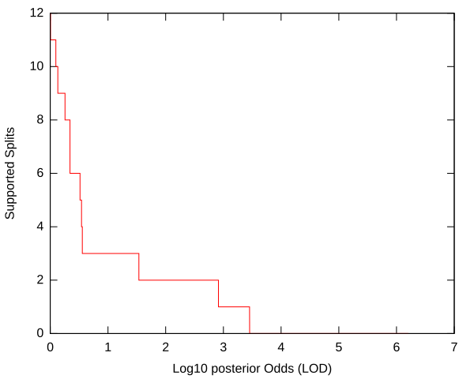
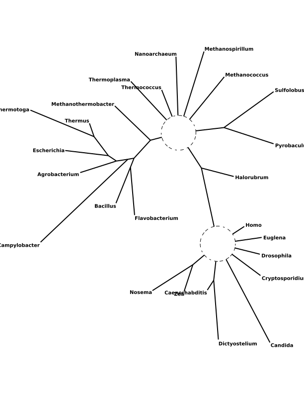
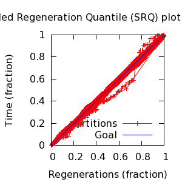
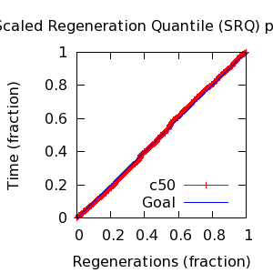

MCMC Post-hoc Analysis: 25 sequences
| Partition | Sequences | Lengths | Alphabet | Substitution Model | Indel Model | Scale Model |
|---|
| 1 |
25.fasta |
111 - 131 |
RNA | S1 = gtr+Rates.gamma[4]+inv |
I1 = rs07 |
scale1 ~ gamma[0.5,2,0.0] |
| Statistic | Median | 95% BCI | ACT | ESS | burnin | PSRF-CI80% | PSRF-RCF |
|---|
| prior |
-330.5 |
(-383.1, -283.6) |
40.2 |
35818 |
523
|
1 | 1.001
|
| prior_A1 |
-427.4 |
(-476.8, -384.3) |
39.98 |
36016 |
371
|
1 | 1
|
| likelihood |
-2695 |
(-2723, -2668) |
59.99 |
24003 |
218
|
1 | 1.001
|
| posterior |
-3026 |
(-3071, -2986) |
16.58 |
86871 |
439
|
1 | 1.003
|
| Heat.beta |
1 |
| | | | | |
| Scale[1] |
9.422 |
(6.138, 13.54) |
2.122 |
678581 |
266
|
0.9999 | 0.9979
|
| gtr:pi[A] |
0.2135 |
(0.1743, 0.2566) |
15.89 |
90629 |
631
|
1 | 0.9998
|
| gtr:pi[C] |
0.2852 |
(0.2448, 0.3276) |
16.53 |
87128 |
248
|
1 | 0.9998
|
| gtr:pi[G] |
0.3049 |
(0.2593, 0.353) |
12.54 |
114860 |
402
|
1 | 0.9992
|
| gtr:pi[U] |
0.1939 |
(0.1635, 0.226) |
30.38 |
47400 |
650
|
1 | 0.9992
|
| gtr:sym[AC] |
0.03505 |
(0.003978, 0.06984) |
10.94 |
131671 |
297
|
0.9998 | 1.004
|
| gtr:sym[AG] |
0.1627 |
(0.1123, 0.2193) |
16.57 |
86881 |
402
|
1 | 1.005
|
| gtr:sym[AU] |
0.2859 |
(0.2087, 0.3665) |
13.39 |
107537 |
519
|
1 | 0.999
|
| gtr:sym[CG] |
0.08263 |
(0.04476, 0.1242) |
29.81 |
48306 |
715
|
1 | 0.9972
|
| gtr:sym[CU] |
0.3505 |
(0.2727, 0.4333) |
14.85 |
96950 |
430
|
1 | 1.002
|
| gtr:sym[GU] |
0.07562 |
(0.03661, 0.1196) |
21.76 |
66190 |
479
|
1 | 0.999
|
| Rates.gamma:alpha |
1.538 |
(0.9609, 2.256) |
5.22 |
275871 |
253
|
0.9999 | 1.002
|
| inv:p_inv |
0.1338 |
(0.06288, 0.2113) |
2.553 |
563974 |
156
|
1 | 0.999
|
| rs07:mean_length |
2.179 |
(1.676, 2.838) |
100.3 |
14360 |
259
|
1 | 1.001
|
| rs07:log_rate |
-3.857 |
(-4.196, -3.503) |
7.061 |
203939 |
194
|
1 | 0.9998
|
| |A1| |
173 |
(158, 197) |
495.3 |
2907 |
7215 |
0.9774 | 0.9964
|
| #indels1 |
57 |
(50, 65) |
18.16 |
79274 |
371 |
0.8633 | 1.002
|
| |indels1| |
120 |
(99, 144) |
215.6 |
6679 |
1077 |
0.9917 | 0.9981
|
| #substs1 |
714 |
(694, 730) |
149 |
9667 |
489 |
0.9684 | 0.9977
|
| Scale1*|T| |
10.97 |
(8.809, 13.52) |
7.433 |
193729 |
233
|
1 | 0.9988
|
| |A| |
173 |
(158, 197) |
495.3 |
2907 |
7215 |
0.9774 | 0.9964
|
| #indels |
57 |
(50, 65) |
18.16 |
79274 |
371 |
0.8633 | 1.002
|
| |indels| |
120 |
(99, 144) |
215.6 |
6679 |
1077 |
0.9917 | 0.9981
|
| #substs |
714 |
(694, 730) |
149 |
9667 |
489 |
0.9684 | 0.9977
|
| |T| |
1.169 |
(0.7907, 1.596) |
1.008 |
1429089 |
168
|
1 | 0.9984
|


| Partition support: Summary |
| Partition support graph: SVG |
Partition 1
|
|
|
Diff |
|
Min. %identity |
# Sites |
Constant |
Informative |
| Initial |
FASTA |
HTML |
Diff |
|
12.7% |
131 |
0 (0%) |
126 (96.2%) |
| Best (WPD) |
FASTA |
HTML |
|
AU |
31.5% |
198 |
11 (5.56%) |
123 (62.1%) |


- Partition uncertainty
- SRQ plot: partitions
- SRQ plot: c50
- Variation in split frequency estimates
| burnin (scalar) | ESS (scalar) | ESS (partition) | ASDSF | MSDSF | PSRF-CI80% | PSRF-RCF |
|---|
| 7215 | 2908 | 6698.038 | 0.004 | 0.017
| 1 | 1.005 |
command line: bali-phy 25.fasta -S gtr+Rates.gamma+inv
directory: /gpfs/fs0/data/wraycompute/br51/Work/3.1
| chain # | burnin | subsample | Iterations (after burnin) | subdirectory |
|---|
| 1 |
20000 |
1 |
180000 |
25-1 |
| 2 |
20000 |
1 |
180000 |
25-2 |
| 3 |
20000 |
1 |
180000 |
25-3 |
| 4 |
20000 |
1 |
180000 |
25-4 |
| 5 |
20000 |
1 |
180000 |
25-5 |
| 6 |
20000 |
1 |
180000 |
25-6 |
| 7 |
20000 |
1 |
180000 |
25-7 |
| 8 |
20000 |
1 |
180000 |
25-8 |
| P(data|M) = -2723.519 +- 0.211
|
Complete sample: 1529699
topologies |
95% Bayesian credible interval: 1449809 topologies |
| topology | ~ uniform on tree topologies |
| branch lengths | ~ iid[num_branches[T],gamma[0.5,div[2,num_branches[T]],0.0]] |
| S1 | = |
gtr+Rates.gamma[4]+inv
| gtr:sym | ~ | dirichlet_on[letter_pairs[a],1]
|
| gtr:pi | ~ | dirichlet_on[letters[a],1]
|
| Rates.gamma:alpha | ~ | log_laplace[6,2]
|
| inv:p_inv | ~ | uniform[0,1]
|
|
| I1 | = |
rs07
| rs07:log_rate | ~ | laplace[-4,0.707]
|
| rs07:mean_length | ~ | exponential[10,1]
|
|
{kind=link}
{kind=link}
{kind=link}
{kind=link}
{kind=link}
{kind=link}
{kind=link}
{kind=link}
{kind=link}
{kind=link}
{kind=link}
{kind=link}